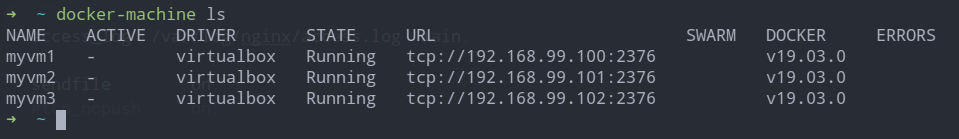
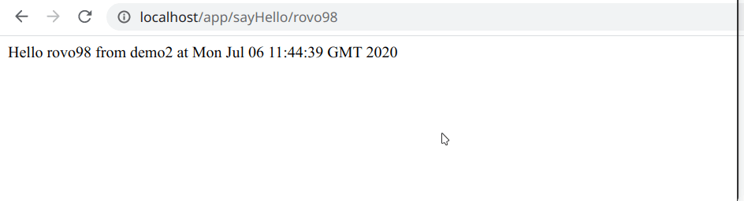

Nginx 是高性能的 http 服务器，反向代理服务器。结合 Tomcat 一起使用可以很容易实现负载均衡。
本文主要介绍使用 SpringBoot + Docker + Nginx 实现的负载均衡的一次简单实践。

1. 构建 SpringBoot 项目 Docker 镜像
我个人使用 docker 已经有一段时间了，虽然仍有许多未掌握的内容，但它确实在开发过程中给我带来了极大的便利。docker 能够为开发者提供一致的开发环境和部署环境，很好地提升了编程开发体验。接下来，我将给出两个几乎相同的 SpringBoot 项目，然后用 docker 来构建镜像。
1.1 SpringBoot 项目
由于我们的主要目的是实现负载均衡，因此只需要简单的 SpringBoot 项目实现即可。
- 创建 SpringBoot 项目，添加
spring-boot-starter-web和spring-boot-starter-test依赖就可以了； 然后，编译一个简单的
RestController，写一个处理GET请求 Mapping，返回一个字符串即可。1
2
3
4
5
6
7
8
9
10
11
12
13
14
15
16
public class Demo1Application {
public static void main(String[] args) {
SpringApplication.run(Demo1Application.class, args);
}
}
("/app")
class TestController {
("/sayHello/{name}")
public String hello(@PathVariable("name") String name) {
return "Hello " + name + " from demo1. " + new Date().toString();
}
}第二个 SpringBoot 也是类似的，为了区分，我们将
/app/sayHello{name}的返回字符串改为1
2
3...
return "Hello " + name + " from demo2 at " + new Date().toString();
...
编写 Dockerfile
我们知道，运行 SpringBoot 项目，是通过 java -jar xxx.jar 的方式来运行的。因此我们可以编写如下 Dockerfile：
sb-demo1 Dockerfile:
1 | FROM openjdk:8-jdk-alpine |
sb-demo2 Dockerfile:
1 | FROM openjdk:8-jdk-alpine |
关于 -Djava.security.egd=file:/dev/./urandom 系统属性的作用：主要是为了提升 docker 容器中 Tomcat 启动的性能。
Tomcat 使用 java.security.SecureRandom 来提供密码学上安全性强的伪随机数。类 Unix 系统具有一个特殊的文件 /dev/random 来通过访问从设备驱动程序和其他源收集的环境噪声来提供伪随机数。这这种情况下，如果请求大于熵，则会发生阻塞。而 /dev/urandom 则永远不会阻塞，即使伪随机数产生器的种子在启动时没有完全用熵初始化。另外，还有一个 /dev/arandom特殊文件，它则是在启动时阻塞，直到种子已经完全初始化为止，之后就再也不会阻塞了。
默认情况下，JVM 使用 /dev/random 作为 SecureRandom 的伪随机数生成器，因此，Java 代码可能会以我们不期望的方式进行阻塞。-Djava.security.egd=file:/dev/./urandom 就是为了告诉JVM 使用 /dev/urandom 而不是 /dev/random 的。
额外的 /./ 似乎是让 JVM 使用 SHA1PRNG 算法作为 PRNG (Pseudo Random Number Generater，伪随机数生成器)的基础。它要比/dev/urandom 的原始伪随机数生成算法要强。
1.2 构建镜像的方式
直接通过
docker image build -t <tag> <context_location>命令来进行构建:1
docker image build -t springboot-docker-demo/sb-demo1:latest .
maven 项目可以使用
dockerfile-maven-plugin插件来构建镜像:1
2
3
4
5
6
7
8
9
10
11
12
13
14
15
16
17
18
19
20
21
22
23
24
25
26
27
28
29
30
31<plugin>
<groupId>com.spotify</groupId>
<artifactId>dockerfile-maven-plugin</artifactId>
<version>1.4.13</version>
<configuration>
<repository>${docker.image.prefix}/${project.artifactId}</repository>
<!-- <tag>${version}</tag>-->
</configuration>
</plugin>
<plugin>
<groupId>org.apache.maven.plugins</groupId>
<artifactId>maven-dependency-plugin</artifactId>
<executions>
<execution>
<id>unpack</id>
<phase>package</phase>
<goals>
<goal>unpack</goal>
</goals>
<configuration>
<artifactItems>
<artifactItem>
<groupId>${project.groupId}</groupId>
<artifactId>${project.artifactId}</artifactId>
<version>${project.version}</version>
</artifactItem>
</artifactItems>
</configuration>
</execution>
</executions>
</plugin>
之后使用如 mvn clean compiler:compile jar:jar spring-boot:repackage dockerfile:build 这样的命令即可构建出相应的镜像。
2. 配置 Nginx
同样地，还是使用 docker 来运行 nginx，但不管用什么方式，我们都只需要关注 nginx 的配置文件 nginx.conf 的编写，之后在运行 nginx 容器时，将相应的配置文件、日志目录等以数据卷的方式挂载到容器中即可。
2.1 proxy_pass 反向代理
nginx 实现反向代理的方式非常简单，只需要在配置文件中的 proxy_pass 后写要代理的服务器的地址即可。如：
1 | server { # simple reverse-proxy |
2.2 upstream 负载均衡
类似地，实现负载均衡，也只需要对 nginx 的配置文件进行简单的修改即可。如：
1 | upstream big_server_com { |
nginx 的配置文件参考 https://www.nginx.com/resources/wiki/start/topics/examples/full/
3. 运行方式
上面我们已经准备好了所有需要的镜像，要运行这些镜像，启动容器，我们有以下几种方式。
3.1 直接启动各容器
1 | docker run --rm -p 8080:8080 --name sb-demo1 -d springboot-docker-demo/demo1 |
1 | docker run --rm -p 8089:8080 --name sb-demo2 -d springboot-docker-demo/demo2 |
1 | docker run --rm -p 80:80 --name sb-nginx -d nginx:latest \ |
此时，nginx.conf中关于负载均衡配置的部分应该这样编写：
1 | ... |
这种运行方式下，两个 SpringBoot 项目是暴露的，即我们能通过 localhost:8080 或 localhost:8088 来对 SpringBoot 应用进行访问。如果要只让 nginx 能被外界访问，而两个SpringBoot 项目不要被外界访问，我们可以使用 docker network 来创建一个网络，用于连接这些容器。
3.2 docker-compose 方式
docker-compose 是 docker 提供的定义由多个容器组成的应用的方式，以更好地组织和管理多个容器组成的应用。为了运行我们的应用，我们可以编写以下 docker-compose.yml 文件：
1 | version: "3" |
执行 docker-compose up -d 来运行，通过这种方式，能让所有的容器运行在同一个网络中，并只让 nginx 暴露出 80 端口，以供外部访问。
不过，需要注意的是，为了方便，我在创建网络时配置了子网，并为各个容器指定了固定 ip 地址。这时，nginx.conf 中 upstream 部分应该改为：
1 | upstream app { |
3.3 使用 docker stack deploy 部署到 swarm 集群上
通过 docker stack deploy docker-compose.yml 的方式能够将应用部署到 swarm 集群上。
1 | # create three virtualbox machines |
docker-machine ls:

1 | # create a swarm |
之后可使用 docker service ls 或 docker stack services <service_name> 来查看应用的部署情况。
运行结果测试
为了更快地测试结果，我使用的 docker-compose 的运行方式。

可以看到，在刷新后，nginx 能够将请求分发给另一个 SpringBoot 应用，来实现负载均衡。当然，我们还可以结合 ip_hash 使用，此时，客户端第一次访问应用时，会分配到一个特定 SpringBoot 应用，之后再次访问时会继续访问同一个 SpringBoot 应用。
4. 小结
使用 nginx 结合 Tomcat 实现负载均衡看起来是非常简单的，但有些事情必须要实际动手实践才能真正地掌握。在实践的过程中往往也能发现自己之前未能察觉的或他人未提到的问题。
使用 docker 确实能够让的人的开发体验有所提升，熟练使用 docker 后，在日常开发以及学习中，我们即便是在个人笔记本电脑上也能快速地搭建出需要的环境。
本文涉及相关源代码: springboot-docker-nginx-load-balacning
references: